Córtex Estudos · 4º Semestre · Anato Pato II · Aula 13 · AV3
Patologias da Mama
Aula do bloco de saúde da mulher dedicada à mama. A base é a unidade ducto-lobular terminal (UDLT) com sua dupla população celular (luminais + mioepiteliais) e um estroma que responde a hormônios. Sobre essa base vêm os distúrbios de desenvolvimento, as mastites (aguda puerperal, periductal, ectasia ductal, esteatonecrose), as lesões epiteliais benignas (LEBs) em três grupos de risco, o fibroadenoma, o rastreamento mamográfico com BI-RADS e, por fim, o câncer de mama: fatores de risco, vias carcinogênicas, classificação histológica (CDIS, CINE, CIE) e molecular (luminal A, luminal B, HER2, triplo-negativo), terminando em um caso clínico com laudo.
📑 Montado a partir dos slides
Montado a partir dos slides — sem gravação da aula; ênfases do professor serão acrescentadas quando houver áudio. O que está aqui segue o conteúdo dos 42 slides; as explicações conectam e esclarecem o que o slide mostra, sem acrescentar tópicos que não estão nele. As caixas 🎯 Destaque do slide marcam o que o próprio slide destaca (texto em vermelho, quadros, setas). Onde o slide diverge da literatura atual, há uma caixa ⚠️ Divergência: na prova, vale o slide.
🔗 Onde esta aula se encaixa
Retoma conceitos já vistos: hiperplasia × neoplasia, metaplasia (escamosa, apócrina), inflamação aguda × crônica granulomatosa, carcinoma in situ × invasivo (membrana basal) e carcinogênese. A lógica "lesão precursora → in situ → invasivo, detectada por rastreamento" é a mesma do colo uterino (aula 11); aqui o rastreamento é a mamografia, não a citologia.
1 · Micro-anatomia e histologia da mama
- As mamas são anexos de pele especializados, próprios da classe dos mamíferos, dispostos em par sobre o músculo peitoral, na parede torácica superior. A secreção é fonte completa de nutrientes e de proteção imunológica para a prole.
- São glândulas compostas túbulo-alveolares, com regiões diversas compostas por epitélios e por um estroma que responde a hormônios. De fora para dentro:
- Mamilo: epitélio escamoso queratinizado da pele (com as glândulas de Montgomery na aréola).
- Epitélio glandular (ductos e lóbulos): epitélio cuboide de camada dupla.
- Estroma mamário: tecido conjuntivo frouxo e adiposo.
- Cada mama tem 6 a 10 sistemas ductais principais; mais de 60% se originam no mamilo e se ramificam (ducto coletor → seio lactífero → ducto segmentar → subsegmentar → ducto terminal) até a unidade ducto-lobular terminal (UDLT). As células que revestem o ducto terminal e os lóbulos são as que produzem leite.
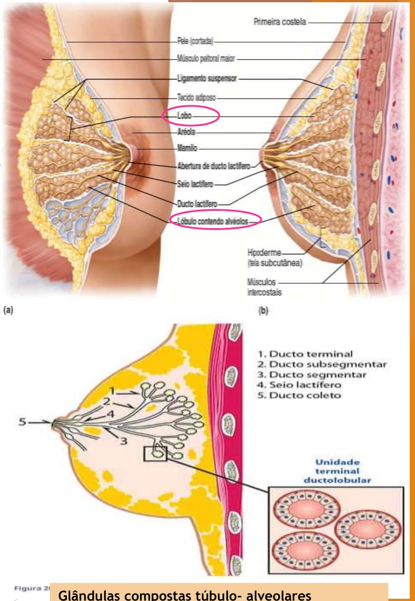
Dupla população celular e dois estromas
- Ductos terminais e ácinos têm dois tipos de células de revestimento:
- Células LUMINAIS (epiteliais): em contato com a luz, formam uma camada única e coesa sobre a camada mioepitelial; são as secretoras de leite na gestação (secreção apócrina).
- Células MIOEPITELIAIS: têm miofilamentos, ficam em rede abaixo das luminais e sobre a membrana basal, dão suporte estrutural ao lóbulo e ajudam na ejeção do leite.
- Na camada luminal do ducto terminal há células-tronco que originam novas células luminais e mioepiteliais.
- Dois estromas:
- Intralobular: conjuntivo frouxo que envolve os ácinos dentro do lóbulo, com células semelhantes a fibroblastos responsivas a hormônios e linfócitos residentes.
- Interlobular: conjuntivo denso e fibroso que separa os lóbulos e se mistura ao tecido adiposo.
🎯 Destaque do slide: a dupla população atesta benignidade
Guarde a imagem do ducto normal: luminais por dentro, mioepiteliais por fora, sobre a membrana basal. Ela volta várias vezes na aula: no fibroadenoma, manter a dupla população "atesta a benignidade"; no CDIS, as mioepiteliais estão preservadas e a membrana basal está íntegra; no invasivo, essa barreira foi rompida.
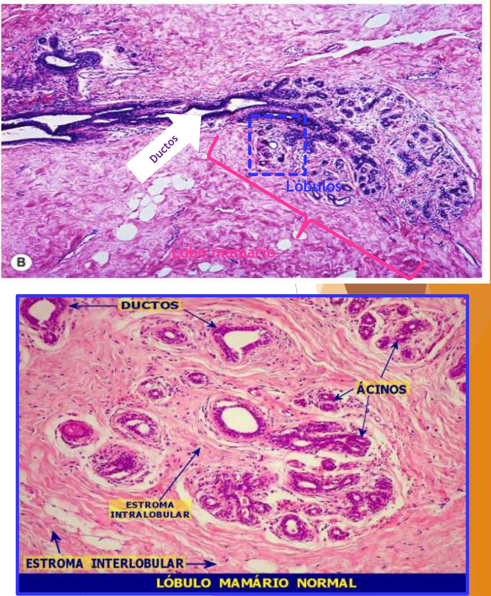
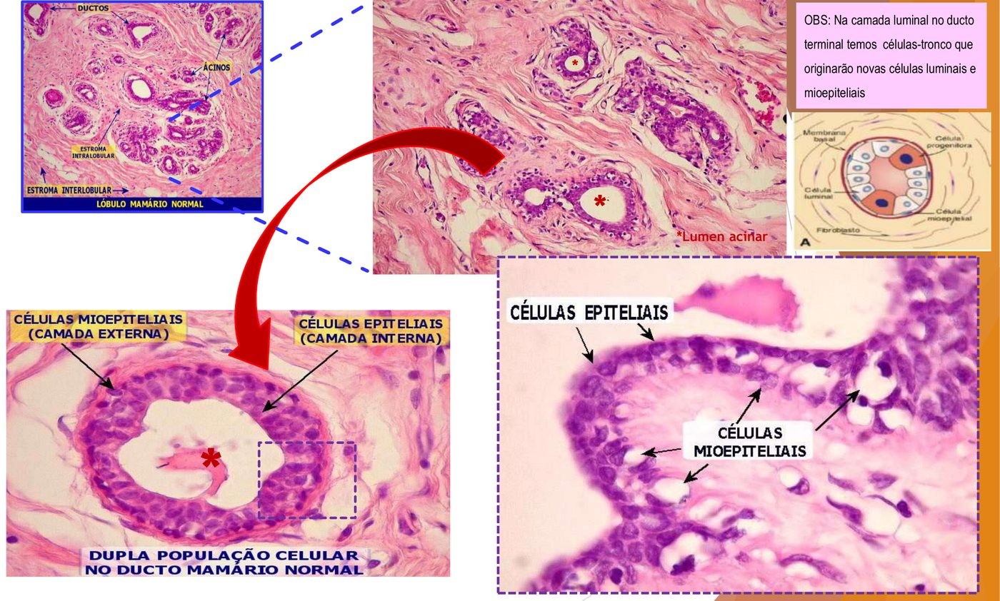
2 · Fisiologia: desenvolvimento, ciclo, gestação e involução
Linha do tempo da mama (slide 4)
- 1Embriogênese — o mesênquima em volta do broto mamário se condensa; cordões de células epiteliais "invadem" o estroma e formam um sistema ductal rudimentar.
- 2Nascimento — a mama não está completamente formada; mama feminina pré-púbere e mama masculina são semelhantes.
- 3Vida reprodutiva — alterações cíclicas com estrogênio e progesterona: na 1ª metade do ciclo, lóbulos quiescentes e células luminais proliferando; após a ovulação, a progesterona amadurece os lóbulos, vacuoliza as células epiteliais e deixa o estroma edematoso; na menstruação, a queda hormonal faz os lóbulos regredirem e o edema diminuir.
- 4Gestação — pico de maturação e função: lóbulos aumentam em número e tamanho; no fim da gravidez a mama é quase toda lóbulos (ácinos proliferados) com estroma escasso.
- 5Menopausa (involução) — apoptose epitelial pela produção mínima de estrogênio (o pouco que resta vem da adrenal e do tecido adiposo e mantém lóbulos remanescentes); o estroma denso da mama jovem é substituído por gordura: lipossubstituição.
- O eixo hormonal da mama (slide 5): o hipotálamo (GnRH) comanda a adeno-hipófise, que libera prolactina (produção de leite) e as gonadotrofinas; a neuro-hipófise libera ocitocina, que contrai as mioepiteliais (expulsão do leite) e o útero.
- A lipossubstituição tem consequência prática: com a idade a mamografia fica mais radiotransparente, o que facilita ver massas densas e calcificações (tópico 11).
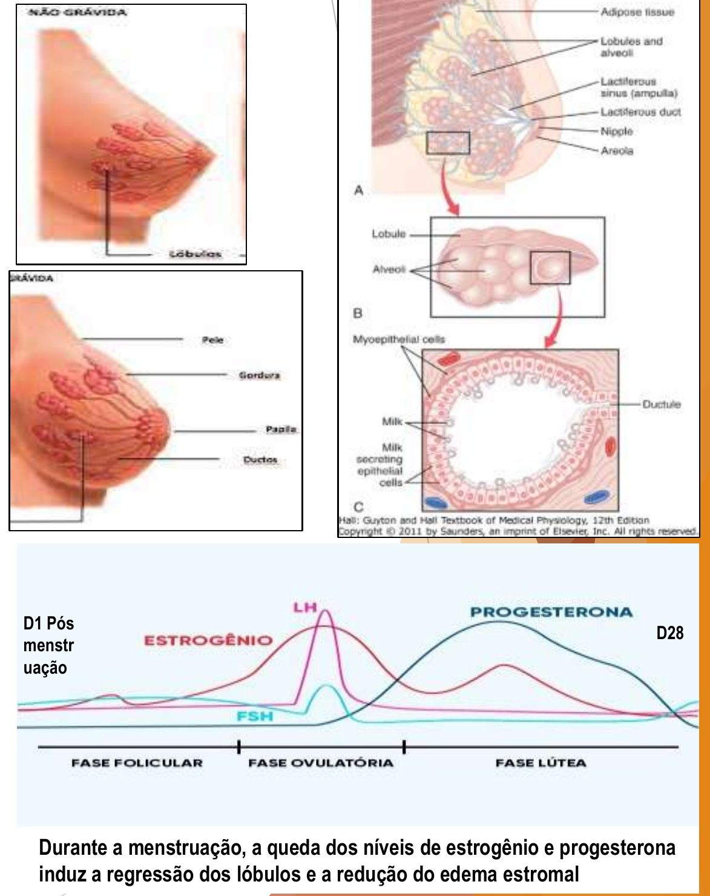
3 · Distúrbios de desenvolvimento
| Distúrbio | O que é | Ponto de atenção |
|---|---|---|
| Remanescentes mamários | Espessamento epidérmico persistente nas linhas mamárias: mamilos supranumerários (politelia) e mamas extranumerárias (polimastia), incompletas ou completas | Ao longo da linha mamária (axila → virilha) |
| Tecido mamário axilar acessório (cauda de Spence) | Prolongamento do sistema ductal para a fossa axilar | Pode originar carcinoma de mama ectópico; entra no planejamento de mastectomias profiláticas |
| Inversão mamilar congênita | Comum, uni ou bilateral; pode resolver na gravidez ou com tração simples | Diferenciar da retração unilateral adquirida, que é sinal patológico |
| Gigantomastia / macromastia | "Hipertrofia mamária", multicausal | Pode comprometer a capacidade funcional (indicação de cirurgia); congênita costuma ser bilateral |
⚠️ Não confundir: mamilo invertido × retraído
Inversão congênita: presente desde o desenvolvimento, frequentemente bilateral, pode corrigir com tração. Retração adquirida unilateral: surge na vida adulta e sugere processo que traciona o ducto (fibrose, carcinoma) — investigar.
4 · Sintomatologia: dor, nódulo e descarga papilar
Dor (mastalgia ou mastodinia)
- Cíclica: comum entre 30 e 40 anos, na semana pré ou transmenstrual. Não cíclica: sem relação com o ciclo.
- A dor não cíclica, unilateral e localizada é a mais relevante: merece investigação.
Massa palpável (nódulo mamário)
- Deve ser distinguida da nodularidade normal da mama (autoexame).
- Toda lesão palpável deve ser investigada. Clinicamente são perceptíveis com mais de 2 cm; as menores aparecem no ultrassom.
- Aparecem em qualquer idade, mais na pré-menopausa. Após implante, acompanhamento clínico longitudinal.
- O diagnóstico diferencial com malignidade pesa mais com a idade: cerca de 10% das massas aos 40 anos e 60% aos 50 podem ser carcinomas. Podem causar ou não assimetria mamária e retração mamilar.
Derrame / descarga papilar (fora da gestação e da lactação)
- É o achado menos comum, porém o mais preocupante.
- Primeiro descartar causas endócrinas (geralmente bilaterais): galactorreia por ↑ prolactina, hipotireoidismo, síndromes anovulatórias, medicamentos. Lembrar que a manipulação pode induzir descarga fisiológica.
- Mais preocupante quando espontânea, unilateral e de aspecto patológico (não láctea): purulenta, sanguinolenta, serosa-exsudativa.
- O risco de malignidade da descarga cresce com a idade: chega a 30% acima dos 60 anos.
🎯 Destaque do slide: o que preocupa
Dor não cíclica, unilateral, localizada · nódulo em mulher mais velha · descarga espontânea, unilateral, sanguinolenta/serosa. O padrão "bilateral, cíclico, provocado" puxa para causa fisiológica ou endócrina.
5 · Mastite aguda (puerperal) e mastite periductal
Doenças inflamatórias acometem pele, glândulas e subcutâneo; aparecem na clínica geral com sintomatologia exuberante e, além dos sinais flogísticos locais, costumam trazer quadro sistêmico (febre).
1) Mastite aguda / mastite puerperal
- Comum no 1º mês de amamentação: fissuras ou fendas no mamilo + infecção.
- Fisiopatologia: no aleitamento a mama fica vulnerável a fissuras pelo trauma; por elas entram Staphylococcus aureus ou outras bactérias, que colonizam e podem evoluir para abscessos superficiais e/ou profundos (celulite mamária), transitórios ou de média duração.
- Clínica/macro: mamas túrgidas, distendidas, eritematosas, dolorosas à palpação.
- Tratamento: antibiótico + esvaziamento da mama (ordenha estimulada).
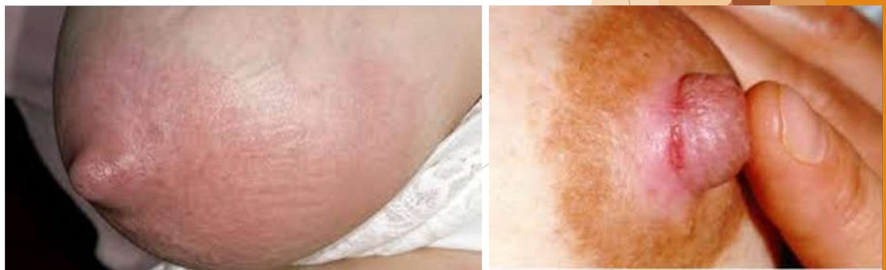
2) Mastite periductal / metaplasia escamosa ductal
- Inflamação crônica não associada à lactação nem à história reprodutiva. 90% associada ao tabagismo; os outros 10%: obesidade, diabetes, trauma, imunossupressão, procedimentos iatrogênicos. Recidiva muito, o que justifica a biópsia confirmatória.
- Fisiopatologia: o epitélio queratinizado do mamilo "se estende" para dentro do ducto lactífero (metaplasia escamosa); a queratina fica retida, obstrui o ducto, rompe e causa inflamação do tipo corpo estranho, com colonização multibacteriana, abscessos e fístulas crônicas.
- Clínica/macro: mama túrgida, eritematosa, com abscessos ou fístulas (abertura na borda da aréola).
- Micro: ductos lactíferos com metaplasia escamosa, infiltrado inflamatório crônico e granulomatoso, abscessos com necrose.
- Tratamento: exérese do ducto envolvido e do trajeto fistuloso (para evitar recidiva) + antibiótico quando necessário. Só drenar não resolve: o tampão de queratina continua lá.
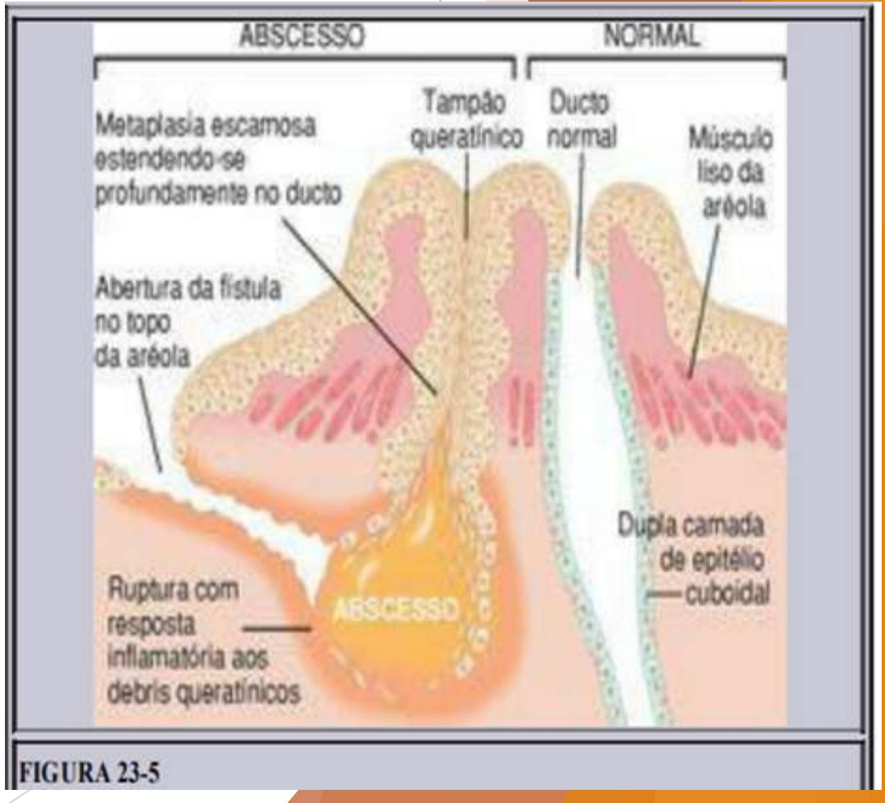
⚠️ Não confundir: mastite puerperal × periductal
Puerperal: aguda, lactante no 1º mês, fissura + S. aureus, trata com antibiótico + ordenha. Periductal: crônica, fora da lactação, tabagista, metaplasia escamosa + queratina retida, fístulas recorrentes, trata com excisão do ducto.
6 · Ectasia ductal e esteatonecrose
| 3) Ectasia ductal | 4) Esteatonecrose (necrose gordurosa) | |
|---|---|---|
| Quem/quando | Fase de involução mamária, 5ª–6ª década, multíparas | História de trauma ou cirurgia prévia |
| Onde | Ductos (dilatação ductal), região periareolar | Inflamação do estroma interlobular (tecido adiposo) |
| Clínica | Massa periareolar mal definida, retração cutânea, frequentemente descarga papilar espessa e branca | Massa palpável indolor, espessamento e retração cutânea; altera a densidade mamográfica e/ou calcifica |
| Micro | Ductos dilatados com debris espessos; reação inflamatória granulomatosa crônica (linfócitos, macrófagos xantomizados, plasmócitos) periductal e intersticial, com fibrose | Lesões agudas hemorrágicas com necrose gordurosa liquefeita no centro; depois, tecido de granulação com células multinucleadas |
🎯 Destaque do slide: as benignas que imitam câncer
As duas produzem massa firme + retração da pele ou do mamilo e alteram a mamografia (a esteatonecrose ainda calcifica). Na palpação e na imagem, podem imitar carcinoma invasivo — por isso a história (trauma/cirurgia, multípara na involução) e a biópsia importam.
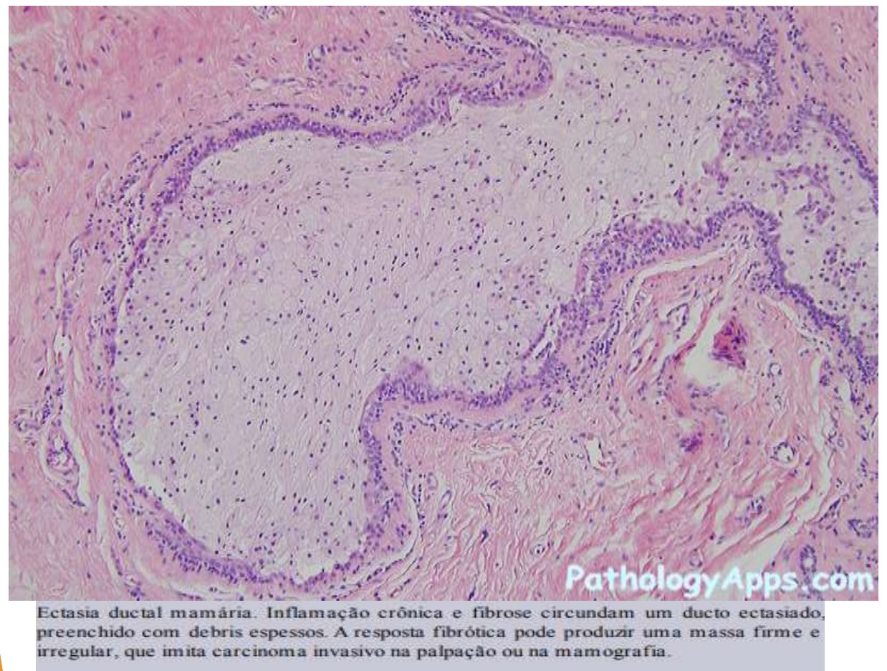
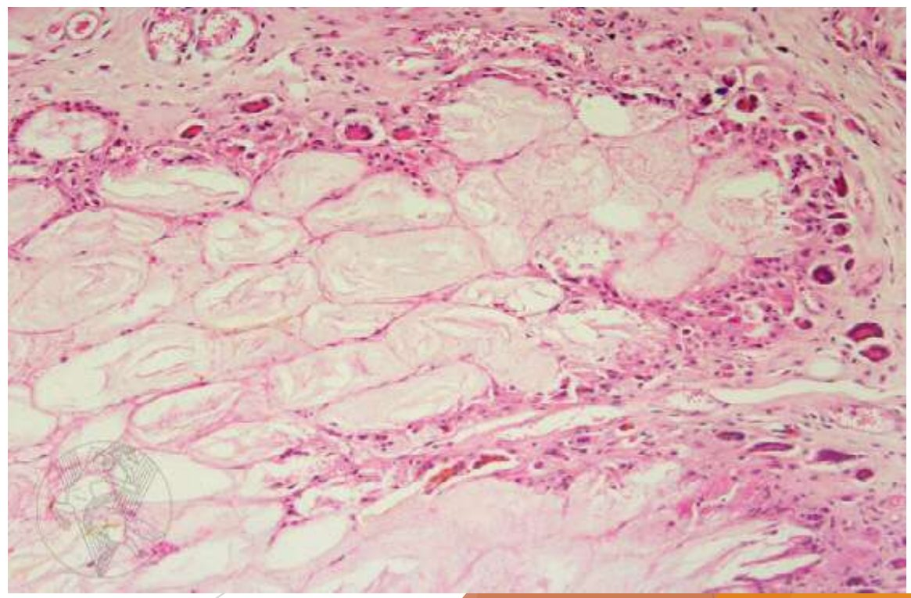
7 · LEBs: os três grupos e as alterações fibrocísticas
- Há grande variedade de alterações benignas que comprometem ductos e lóbulos, na idade reprodutiva ou na pós-menopausa. A mama é um tecido sujeito a alterações frequentes por desequilíbrios hormonais.
- Muitas LEBs são achados da mamografia de rotina (que indica PAAF ou biópsia) ou achados incidentais em peças cirúrgicas. A PAAF (punção aspirativa por agulha fina) é muito útil nas LEBs.
As LEBs em três grupos, pelo risco subsequente de câncer
- 1Alterações fibrocísticas — as antigas lesões não proliferativas; não neoplásicas.
- 2Lesões proliferativas sem atipias — hiperplasia ductal usual, papiloma, lesão esclerosante complexa (doenças proliferativas).
- 3Lesões proliferativas com atipias — hiperplasia ductal atípica e hiperplasia lobular atípica (doenças proliferativas atípicas).
No slide, os grupos 2 e 3 vêm agrupados como "neo benignas"; o grupo 1 não.
1) Alterações fibrocísticas
- Cada vez mais frequentes em mulheres na perimenopausa. Abrangem as patologias não neoplásicas.
- Clínica: área nodulosa de contornos regulares, móvel à palpação, com ou sem descarga.
- Micro: três tipos de formação benigna:
- Lesões císticas: começam como pequenos cistos que coalescem; surgem pela dilatação e expansão de ácinos e lóbulos; frequentemente com metaplasia apócrina (fluido turvo); revestimento colunar, achatado ou ausente; com ou sem calcificações; muitas vezes são aspirados na PAAF.
- Lesões fibróticas: os cistos inflamam e se rompem; o material secretor liberado no estroma desencadeia uma resposta cicatricial (fibrose).
- Lesões adenomatosas (adenose): aumento do número de ácinos por lóbulo, com ácinos de morfologia típica (não distorcidos); relação com descarga e com calcificações nas luzes. Micro: lóbulo com maior densidade de ácinos de aspecto normal.
⚠️ Não confundir: adenose × adenoma de lactação
O slide marca: adenose (aumento espontâneo do número de ácinos, alteração fibrocística) ≠ adenoma de lactação (fisiológico, ligado à gestação/lactação).
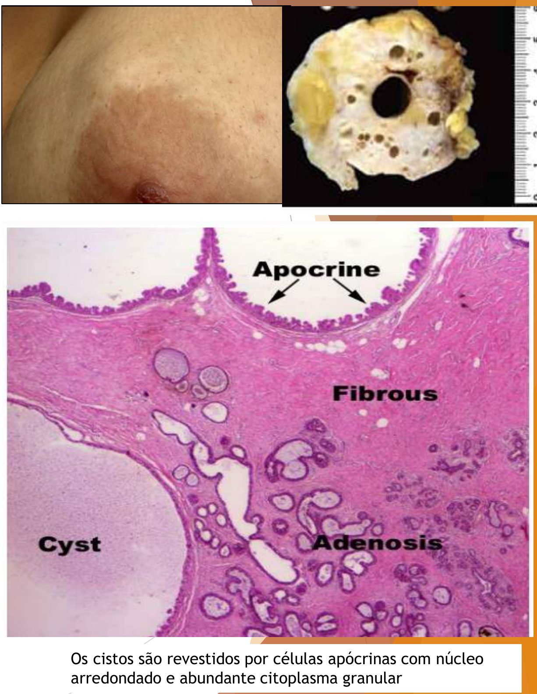
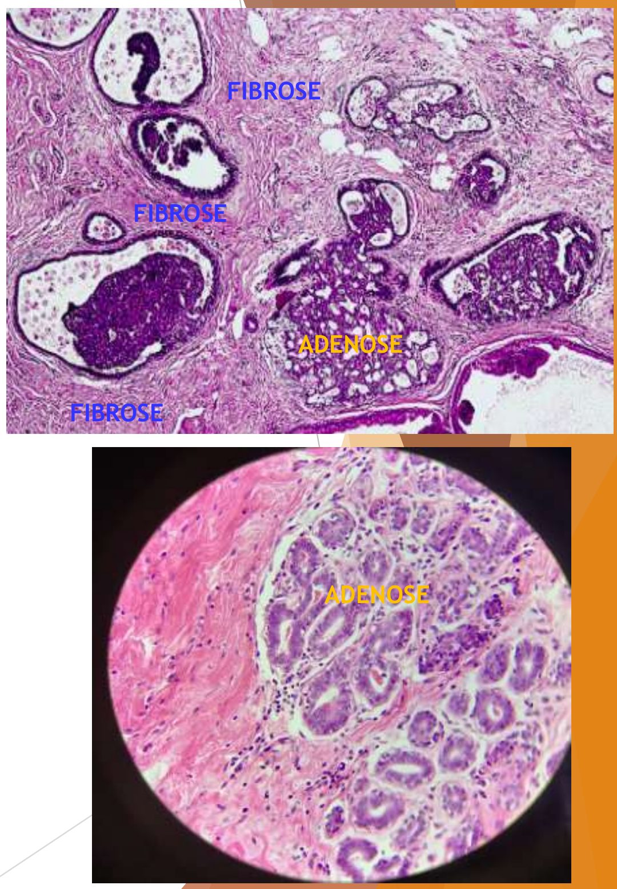
8 · Lesões proliferativas sem atipias
- Proliferações do epitélio ductal e/ou do componente estromal, sem características citológicas ou arquiteturais sugestivas de carcinoma (ausência de atipias).
- Mais frequentes em mulheres entre 30 e 50 anos, com pouca sintomatologia.
- Clínica/macro: nodulações esféricas, sólidas, regulares e móveis. Micro: um padrão isolado ou, geralmente, dois padrões juntos.
a) Hiperplasia ductal usual
- UDLT com mais de duas camadas celulares no revestimento luminal, com luzes irregulares.
- Leve: até 4 camadas de células (mioepiteliais e luminais).
- Moderada ou florida: mais de 4 camadas; a luz é preenchida por células mioepiteliais e luminais, sobrando fenestrações periféricas (aspecto cribriforme).
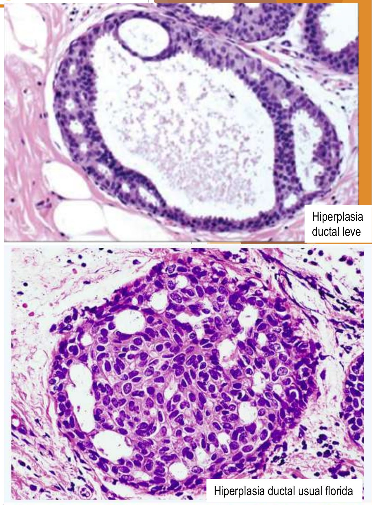
b) Papiloma ductal
- Surge dentro de um ducto dilatado; pode infartar.
- Muito relacionado com descarga papilar (no slide: por sofrer metaplasia apócrina).
- Micro: hiperplasia epitelial com múltiplas ramificações sobre eixos fibrovasculares; isolados (grandes, centrais) ou múltiplos (pequenos).
⚠️ Divergência: por que o papiloma sangra
No slide: a descarga papilar se relaciona com a metaplasia apócrina do papiloma. Na literatura (Robbins), a descarga — muitas vezes sanguinolenta — é atribuída sobretudo à torção ou infarto das papilas (que o próprio slide cita: "podem infartar"). O ponto da aula se mantém: papiloma intraductal é causa clássica de descarga papilar.
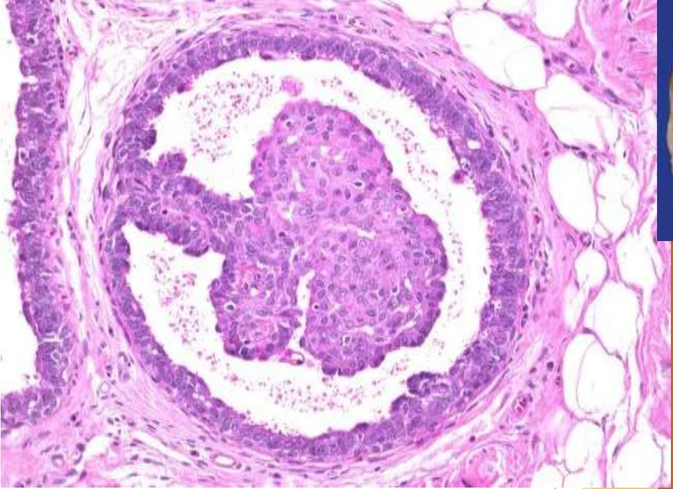
c) Lesão esclerosante complexa ("cicatriz radial")
- Erroneamente chamada de cicatriz radial: não tem relação com trauma.
- Micro: ninho central de glândulas atrofiadas em estroma fibrótico denso, com ductos irradiando em volta.
- Obs. do slide: essa e outras lesões fibróticas e irregulares (como a adenose esclerosante) fazem diagnóstico diferencial com lesões malignas — o aspecto estrelado lembra carcinoma invasivo.
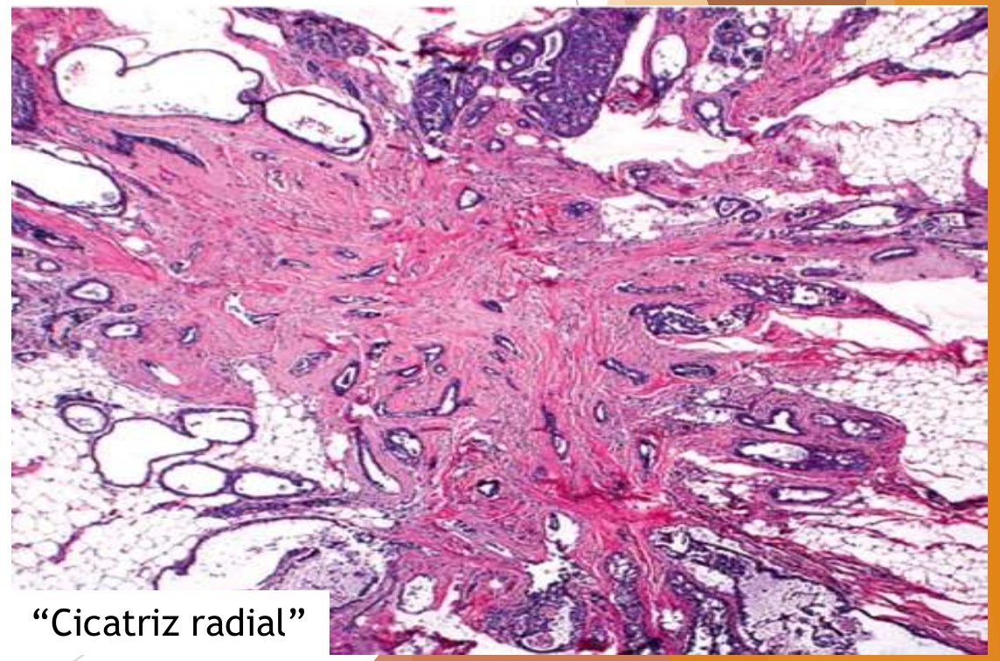
9 · Fibroadenoma
Neoplasia benigna estromal, comumente agrupada com as LEBs.
- Tumor benigno mais comum da mama; ocorre entre 20 e 30 anos; pode ser múltiplo e bilateral.
- Fisiopatologia (slide): surge do estroma intralobular; é uma hiperplasia policlonal com proliferação de elementos epiteliais e estromais, também responsivos a hormônios.
- Evolução lenta; pode mudar com a menstruação e a gestação e regredir após a menopausa.
- Clínica/macro: massa circunscrita (geralmente < 3 cm, mas pode ser grande), móvel, firme e fibroelástica; unilateral (assimetria) e única ou múltipla. Na peça, superfície branca com fendas (ductos intratumorais); no ultrassom, nódulo ovalado bem delimitado.
- Micro: fina cápsula fibrosa; o estroma hiperplasiado empurra e distorce o epitélio, afasta as glândulas, que parecem ramificadas e com ductos alongados/comprimidos. Estroma de células estreladas e fusiformes em material levemente basofílico, que pode ficar hialino na pós-menopausa.
- No componente epitelial: manutenção da dupla população celular dos ductos e ácinos — o que atesta a benignidade.
- Tratamento: casos confirmadamente benignos → vigilância regular, conduta expectante. Responsivo a hormônios: pode regredir na menopausa.
- Ciclosporina: 50% das mulheres transplantadas em uso de ciclosporina desenvolvem fibroadenoma (mais que o grupo controle).
- Pode se associar a lesões fibrocísticas → fibroadenoma complexo.
⚠️ Divergência: hiperplasia policlonal ou neoplasia?
No slide: fibroadenoma = "hiperplasia policlonal". Na literatura (Robbins, 10ª ed.), o componente estromal do fibroadenoma é clonal (mutações de MED12 em grande parte dos casos) — por isso ele é classificado como neoplasia benigna fibroepitelial, com o epitélio sendo arrastado de forma reativa. Na prova, vale a frase do slide; o próprio slide o chama de "neoplasia benigna estromal".
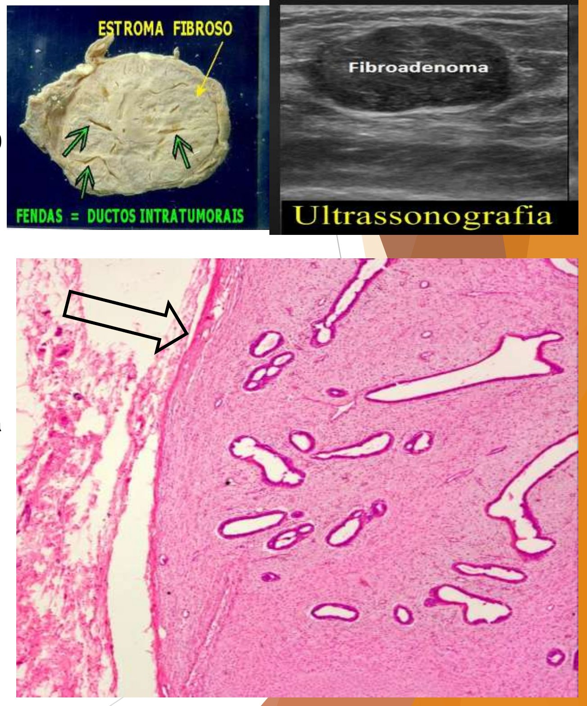
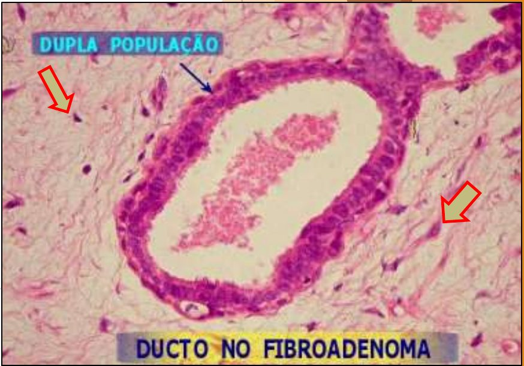
10 · Lesões proliferativas com atipias: HDA e HLA
- Clínica: semelhantes a qualquer proliferação epitelial — a investigação dos fatores de risco ganha relevância.
- Histologia: consideradas neoplasias benignas, mas com atipias focais; proliferações parecidas com neoplasias malignas, porém com morfologia insuficiente para o laudo de carcinoma.
| a) Hiperplasia ductal atípica (HDA) | b) Hiperplasia lobular atípica (HLA) | |
|---|---|---|
| Frequência | Mais comum | Incomum |
| Células | Ductais monomórficas; luminais atípicas regularmente espaçadas | Acinares monomórficas pequenas, arredondadas, NÃO coesas; luminais com atipia (hipercromasia, pleomorfismo ou núcleo aumentado) |
| Arquitetura | Padrão sólido ou cribriforme com luzes arredondadas | Células enchendo os ácinos |
| Extensão | Preenche parcialmente os ductos | Fecha parcialmente a luz alveolar |
🎯 Destaque do slide: lesões precursoras
Ambas são consideradas lesões precursoras e fazem diagnóstico diferencial com carcinoma in situ. A diferença é quantitativa: a atipia é focal e parcial (não preenche nem distende todo o ducto/lóbulo). Biópsia prévia com lesão atípica é fator de risco para câncer de mama (tópico 13).
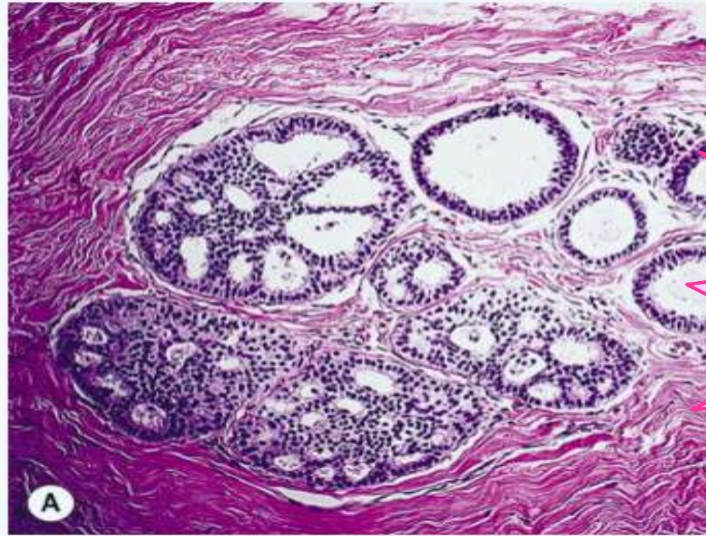
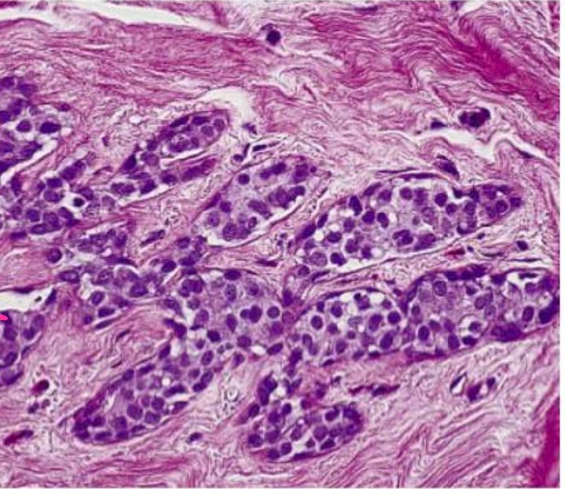
11 · Rastreamento mamográfico e BI-RADS
- A mamografia (MMG) foi introduzida na década de 80 e é hoje a estratégia de rastreamento populacional; há reivindicação de rastrear a partir dos 40 anos.
- Brasil / Ministério da Saúde (slide): bienal para mulheres de 50 anos ou mais; pode começar antes e é mandatória quando há fatores de risco.
- A sensibilidade e a especificidade aumentam com a idade: com a lipossubstituição, a mama fica mais radiotransparente e as massas densas e calcificações se destacam.
⚠️ Divergência: idade do rastreamento
No slide: MS recomenda MMG bienal a partir dos 50 anos, com "reivindicação" para começar aos 40. Atualização: em 2025 o Ministério da Saúde ampliou o acesso — mamografia bienal de rotina de 50 a 74 anos e possibilidade de rastreamento a partir dos 40, por decisão compartilhada; sociedades médicas (SBM, CBR, Febrasgo) recomendam anual a partir dos 40. Na prova, use o slide: bienal, 50+.
Achados sugestivos na mamografia
- Lesões neoplásicas costumam ser mais densas que o tecido normal. Aparecem como:
- Radiodensidades assimétricas: fibroadenomas, cistos, carcinomas.
- Calcificações: cistos apócrinos, fibroadenomas hialinizados, CDIS, carcinomas invasivos (com frequência microcalcificações).
- Calcificações benignas (hiperplasias ductal e lobular, com ou sem atipia): bem delimitadas, "em pipoca", grosseiras e difusas.
- Calcificações malignas: microcalcificações agrupadas.
- O ultrassom também usa BI-RADS e é melhor para lesões císticas.
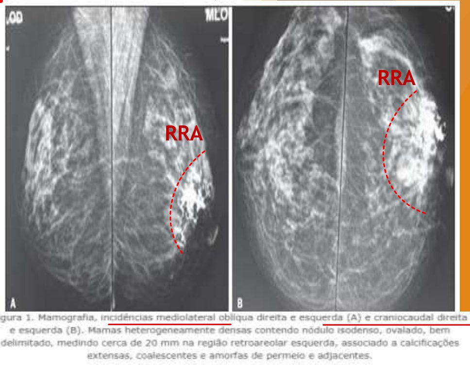
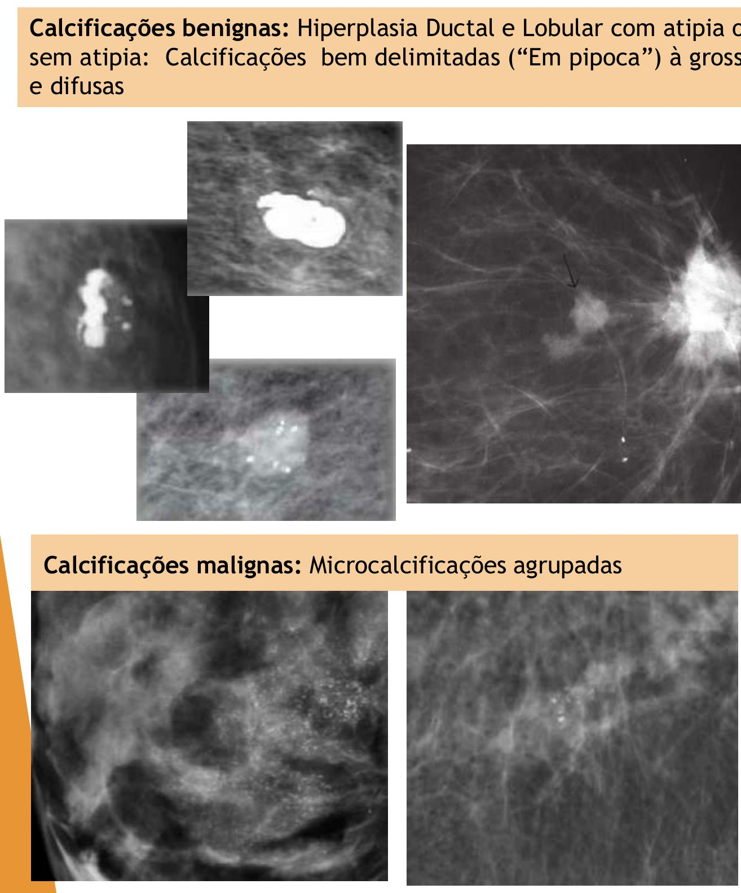
BI-RADS × conduta
| BI-RADS | Interpretação | Risco de câncer | Conduta |
|---|---|---|---|
| 0 | Inconclusivo | Indeterminado | Avaliação adicional (incidências, manobras, US), comparar com MMG anterior |
| 1 | Negativo | 0% | Rastreamento de rotina conforme a faixa etária |
| 2 | Achado tipicamente benigno | 0% | Rotina conforme a faixa etária |
| 3 | Achado provavelmente benigno | < 2% | Controle radiológico por 3 anos (a cada 6 meses no 1º ano, anual nos 2 seguintes); pode ir à mastologia — considerar fatores de risco |
| 4 | Achado suspeito | 2% a 95% | Unidade de referência para investigação histopatológica (biópsia) |
| 5 | Altamente suspeito | > 95% | Biópsia; confirmado, referência terciária para tratamento |
| 6 | Malignidade já comprovada | 100% | Terapêutica em unidade de tratamento de câncer |
🎯 Destaque do slide: BI-RADS 4 e 5 → biópsia core
O slide circula as categorias 4 e 5 e o risco (2–95% e > 95%) com seta para a biópsia por agulha grossa (core) guiada por imagem. No BI-RADS 3, o lembrete "fatores de risco?" — a conduta pode mudar conforme a paciente. A atenção primária mantém a coordenação do cuidado.
🔗 Discussão de exame (slide 25)
Um laudo real de mamografia de rastreamento é usado para mostrar a importância da correlação clínica: mamas densas e heterogêneas "podem obscurecer pequenos nódulos"; calcificações e linfonodo intramamário de aspecto benigno; conclusão BI-RADS 2, com a observação de que, em mamas densas, alterações palpáveis ou alto risco, o ultrassom complementa. O slide também mostra a baixa cobertura de mamografia no país (cerca de 10–20% por região entre 2013 e 2021).
12 · Relevância das LEBs: risco, idade, topografia e metástase
- O esquema do slide liga os grupos ao câncer: lesões não proliferativas → (1–3%) → lesões proliferativas benignas → (5–17%) → lesões malignas. Quanto mais proliferativa e atípica, maior o risco subsequente.
- Idade e diagnóstico diferencial (curva de Hughes): o fibroadenoma tem pico por volta dos 20 anos; o cisto, entre 40 e 50; o câncer cresce progressivamente com a idade. É a base do raciocínio "nódulo em jovem = fibroadenoma; nódulo em mulher mais velha = pensar em câncer".
- 70% das massas palpáveis, dor, descarga ou nodulosidades ainda são LEBs: a maioria das queixas mamárias é benigna.
- Topografia: maior prevalência de câncer no quadrante superior externo (QSE, ~45%), seguido da região retroareolar (RRA, ~25%); QSI ~15%, QIE ~10%, QII ~5%. O QSE é onde há mais tecido glandular (inclui o prolongamento axilar).
- Metástase linfática: a principal via de drenagem é para os linfonodos axilares, passando pelo linfonodo sentinela; também há drenagem para a cadeia mamária interna.
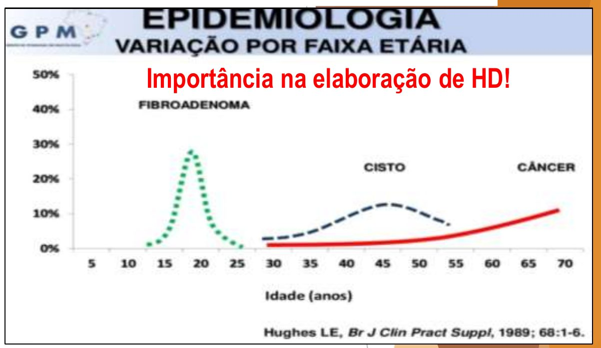
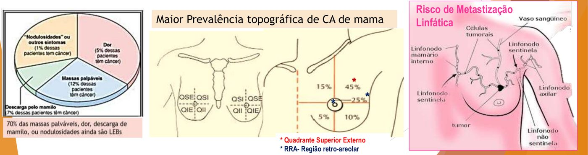
⚠️ Como ler os percentuais do esquema
O slide mostra "1–3%" e "5–17%" entre os grupos. Na literatura, o risco costuma ser expresso como risco relativo: lesões não proliferativas praticamente não aumentam o risco; proliferativas sem atipia, ~1,5–2×; com atipia (HDA/HLA), ~4–5×. A mensagem é a mesma: o risco sobe com a proliferação e a atipia.
13 · Câncer de mama: epidemiologia e fatores de risco
Epidemiologia (slide 31)
- "Adenocarcinoma de mama", também chamado simplesmente de carcinoma: tumor maligno extracutâneo mais comum em mulheres; no slide, a 2ª neoplasia com maior mortalidade.
- Doença heterogênea e multifatorial (fatores genéticos, somático-hormonais e ambientais). Mais de 1 milhão de casos/ano no mundo; uma mulher que chega aos 90 anos tem chance de 1 em 8.
- Brasil: 73.610 casos novos em 2025 (~66/100 mil); 20.165 óbitos em 2023 (DATASUS-SIM).
- Nas três últimas décadas, aumento do diagnóstico em fases mais precoces, pelo rastreamento mamográfico. Diagnóstico precoce → redução da mortalidade (ainda um desafio).
- Carcinomas em fase inicial (in situ) têm alta taxa de cura após excisão cirúrgica (com marcação do sítio cirúrgico).
⚠️ Divergência: 2ª ou 1ª causa de morte?
No slide: "2ª neoplasia com maior mortalidade" — o dado dos EUA (Robbins), onde só perde para o câncer de pulmão. No Brasil (INCA), o câncer de mama é a 1ª causa de morte por câncer em mulheres. Na prova, siga o slide; saiba que o dado brasileiro é diferente.
Fatores de risco pessoais e ambientais (slide 28)
| Anamnese | Fator de risco |
|---|---|
| Sexo e idade | 99% mulheres; ~77% com 50 anos ou mais (raro antes dos 25) |
| Exposição hormonal (menarca, menopausa, paridade, amamentação) | Menarca antes dos 11: risco ~30% maior que aos 14. Nuliparidade ou 1º filho nascido vivo após os 35 e menopausa após os 55 aumentam o risco. 1º filho aos 20 anos = metade do risco; quanto mais tempo de amamentação, menor o risco |
| Hereditariedade | BRCA, parente de 1º grau, até 3 parentes de 2º grau |
| Lesões precursoras e cânceres | Biópsias prévias com lesões atípicas ou CIS; história de câncer de ovário ou endométrio |
| Raça e etnia | Brancas: maior incidência geral, em idade maior, tipos indolentes. Negras: tipos histológicos mais agressivos, em idade menor |
| Obesidade e dieta | Maior risco em obesas na pós-menopausa (estrogênio produzido no tecido adiposo periférico, microambiente inflamatório e antiapoptótico); álcool (iniciador e promotor) |
| Hiperexposição estrogênica | Distúrbios hormonais, terapia de reposição hormonal na pós-menopausa (pelos cânceres RE+) |
| Exposições laborais | Agrotóxicos, radiação X e gama, fumaça de cigarro, trabalho noturno |
- Fatores protetores (slide): atividade física, amamentação, mamas não densas, quimioprevenção com alimentação antioxidante.
- Sinais de alerta para encaminhar ao mastologista (CONITEC/MS 2024): nódulo em mulher ≥ 50 anos; nódulo em mulher < 30 que persiste por mais de um ciclo; nódulo endurecido e fixo ou que cresce em qualquer idade; descarga papilar espontânea unilateral; lesões na pele da mama que não melhoram com tratamento tópico; homem > 50 anos com aumento unilateral; linfonodo axilar aumentado; edema com pele em casca de laranja; retração da pele; mudança no formato do mamilo.
- O BCRAT (Breast Cancer Risk Assessment Tool) calcula o risco absoluto individual.
⚠️ Divergência: "quimioprevenção com alimentação antioxidante"
No slide: quimioprevenção com alimentação antioxidante entre os fatores protetores. Na literatura, quimioprevenção designa o uso de medicamentos (tamoxifeno, raloxifeno, inibidores de aromatase) em mulheres de alto risco; o efeito protetor de dietas antioxidantes não está comprovado. Atividade física e amamentação, sim, são protetores consistentes.
14 · Etiologia e vias carcinogênicas
- O câncer de mama é muito heterogêneo: o tipo depende da etiologia e da via carcinogênica ativada.
- Hereditários (mutações germinativas, ~12% do total): genes de suscetibilidade BRCA1 e BRCA2 (supressores tumorais de reparo do DNA); diagnóstico em média 20 anos mais cedo; importância da investigação familiar (mama, ovário, endométrio) — base de mastectomias/ooforectomias profiláticas.
- Esporádicos (mutações somáticas, hormonais e ambientais): a maioria, em mulheres pós-menopausadas; originam-se de células glandulares que respondem ao estrogênio. Mutações frequentes: RE, HER2, P53, BRCA.
- Da exposição ao câncer: fatores genéticos + hormonais (exposição prolongada ao estrogênio) + ambientais (radiação, químicos) → dano ao DNA, falha no reparo, proliferação e acúmulo de mutações → transformação maligna das células glandulares.
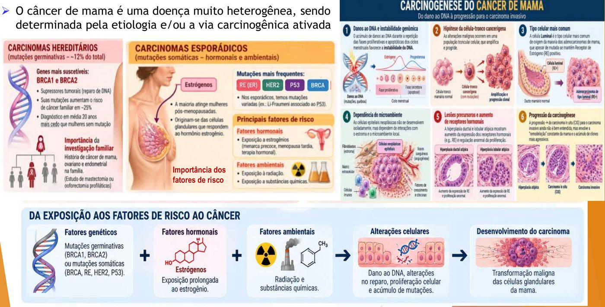
Três vias principais (slide 30)
| Via | Origem / lesões no caminho | Resultado |
|---|---|---|
| RE-positiva (mais comum, seta amarela) | Germinativa em BRCA2 ou esporádica; ganho de 1q, perda de 16q, mutações de PIK3CA; atipia epitelial plana → hiperplasia ductal atípica → CDIS | Luminal (RE+/HER2−), 50–65% dos cânceres |
| HER2 (seta verde) | Germinativa em TP53 ou esporádica; amplificação de HER2; nenhuma lesão precursora definida → CDIS | HER2-positivo, ~20% |
| RE-negativa (menos comum, seta azul) | Germinativa em BRCA1; mutações em TP53, inativação de BRCA1 → CDIS | Triplo-negativo (RE−/HER2−), ~15% |
A amplificação de HER2 pode ocorrer em lesões RE-positivas ou RE-negativas.
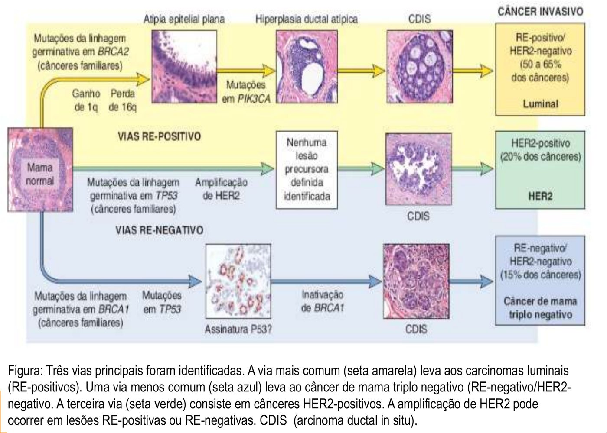
🔗 BRCA1 × BRCA2
Pelo esquema: BRCA2 → via RE-positiva (luminal); BRCA1 → via RE-negativa (triplo-negativo). É uma distinção que costuma ser cobrada.
15 · Classificação histológica, CDIS e doença de Paget
- 95% são adenocarcinomas. Todos se originam das células-tronco da UDLT, mas foram chamados classicamente de ductal ou lobular pela localização.
- Começam como carcinoma in situ no ducto/lóbulo → rompem a membrana basal e invadem o estroma → carcinoma invasivo.
- No diagnóstico: ~30% in situ e ~70% invasivos.
- Pela heterogeneidade biológica/genética, a denominação clássica originou 4 grupos:
- Ductal in situ → Ductal invasivo / CINE (carcinoma invasivo não especial).
- Lobular in situ → Lobular invasivo / CIE (carcinoma invasivo especial e subgrupos).
- Os outros 5%: carcinoma de células escamosas, tumor filoides, sarcomas e linfomas.
1) Carcinoma ductal in situ (CDIS) — ~80% dos in situ
- Também chamado carcinoma intraductal; sua detecção aumentou com a mamografia.
- Clínica (slide): massa palpável de nodularidade vaga, mas endurecida e fixa; descarga papilar é incomum.
- Micro: células tumorais limitadas aos ductos pela membrana basal íntegra, com células mioepiteliais normais; podem formar lesões extensas.
- Cinco subtipos, dois padrões predominantes:
- Comedocarcinoma: massas sólidas de células pleomórficas de alto grau nuclear com necrose central.
- Não comedocarcinoma: padrões monomórficos (papilífero, cribriforme, sólido), graus variados de atipia, sem necrose.
- Tratamento: 95% de sucesso com excisão cirúrgica com margens (quadrantectomia) + avaliação dos linfonodos regionais.
⚠️ Divergência: como o CDIS se apresenta
No slide: massa palpável de nodularidade vaga, endurecida e fixa. Na literatura, o CDIS hoje é detectado sobretudo como microcalcificações na mamografia, geralmente sem massa palpável (o próprio slide diz que a detecção aumentou com a MMG). "Fixo" é mais típico do invasivo, que já infiltra o estroma.
Doença de Paget do mamilo
- Padrão raro do CDIS com comprometimento epitelial da pele: as células malignas se estendem pelo seio galactóforo até a pele do mamilo e da aréola (células de Paget na epiderme).
- Clínica: erupção eritematosa unilateral, crostas e prurido persistentes → confundida com eczema.
🎯 Destaque do slide: "eczema" de mamilo que não melhora
Lesão eczematosa unilateral do mamilo, persistente, que não responde ao tratamento tópico, é doença de Paget até prova em contrário — e significa carcinoma subjacente. Lesão de pele da mama que não responde ao tratamento tópico também está na lista de sinais de alerta da CONITEC.
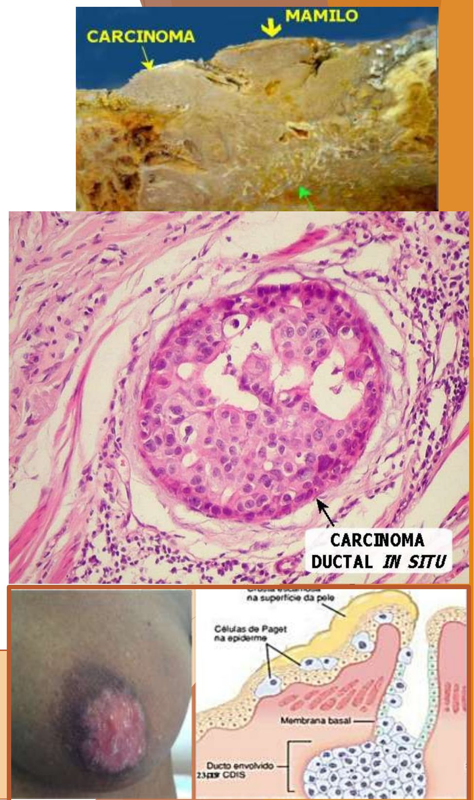
16 · Carcinomas invasivos: CINE e CIE (lobular)
2) Carcinoma invasivo não especial (CINE) — o antigo "ductal invasivo"
- É o mais frequente dos carcinomas invasivos no diagnóstico. Mamografia: BI-RADS 4, 5 ou 6.
- Clínica: tumor palpável endurecido, de borda irregular, fixo, geralmente indolor, com retração papilar e pele em casca de laranja.
- Micro: ampla gama de aspectos, por grau de diferenciação:
- Bem diferenciado: formação tubular, núcleos pequenos e redondos, raras mitoses.
- Moderadamente diferenciado: túbulos com agrupamentos sólidos e células infiltrantes, pleomorfismo moderado, mitoses expressivas.
- Pouco diferenciado: ninhos desorganizados, lâminas sólidas de células com núcleo grande e irregular, alta atividade mitótica, necrose.
- As células formam cordões sólidos que infiltram difusamente a mama, com extensa reação desmoplásica (proliferação de fibroblastos e produção de colágeno), neoangiogênese e inflamação crônica exuberante, com ou sem necrose. Pode haver áreas in situ associadas; nucléolos evidentes e binucleação nas formas sólidas.
🎯 Destaque do slide: a desmoplasia explica a clínica
A reação desmoplásica (colágeno produzido em volta do tumor) é o que torna o nódulo endurecido, fixo e com retração. É o elo entre o que se vê no microscópio e o que se palpa.
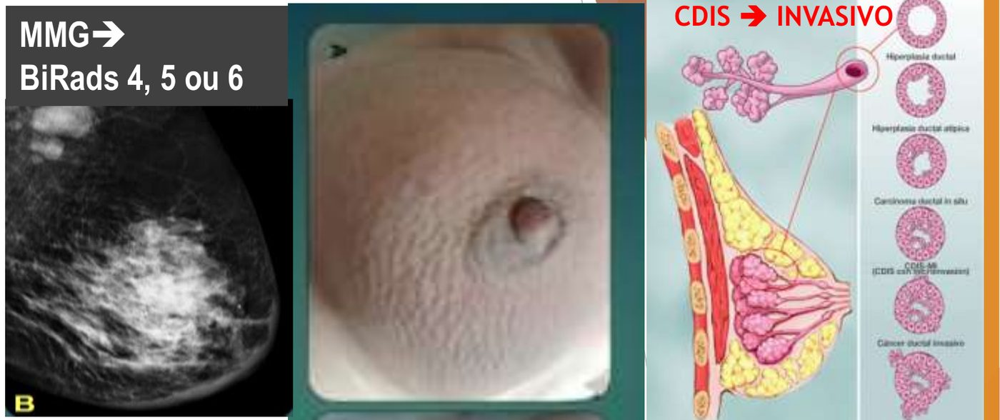
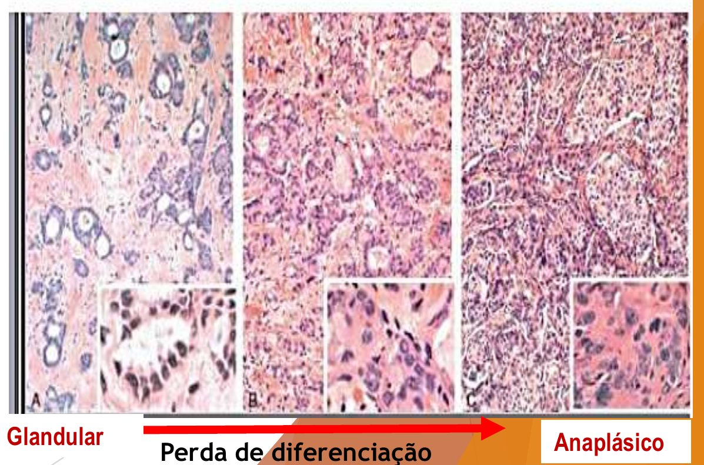
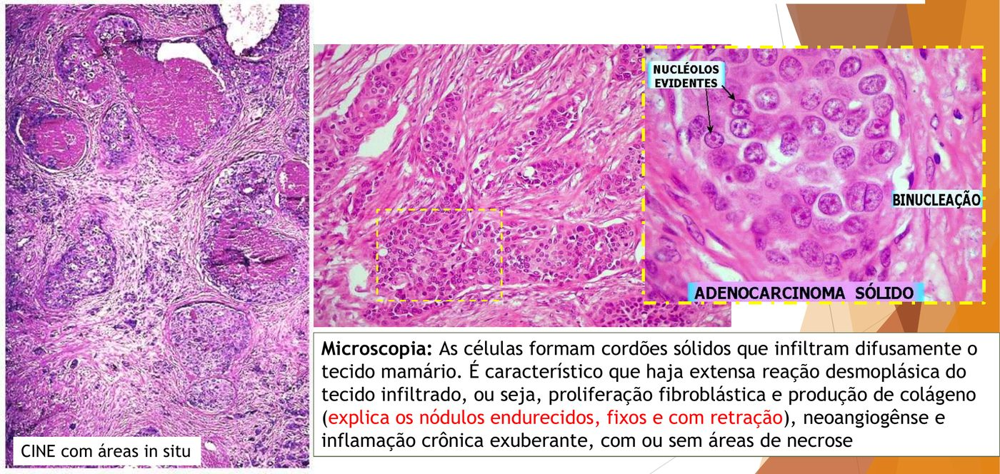
3) Carcinoma invasivo especial (CIE)
- Vários subgrupos; o mais comum é o carcinoma lobular invasivo.
- Clínica: desafiador — infiltração difusa com desmoplasia profunda e difusa; muitas vezes não forma nódulo delimitado (na mamografia do slide: assimetria global e discreto espessamento cutâneo, sem nódulo). No slide, até 40% podem ser bilaterais.
- Micro: células atípicas não coesas e infiltrantes (em fila única entre as fibras de colágeno). No slide, frequentemente associado a casos de carcinoma inflamatório.
- Outros CIE: medular, mucinoso, papilífero.
- Carcinoma inflamatório (texto do slide): mama aumentada, edemaciada e eritematosa, geralmente sem massa palpável; o carcinoma subjacente é pouco diferenciado e invade difusamente; a obstrução de numerosos linfáticos da derme dá a aparência clínica (casca de laranja); a inflamação verdadeira é mínima; a maioria já tem metástases e o prognóstico é muito ruim.
⚠️ Divergência: lobular e carcinoma inflamatório
No slide: o carcinoma lobular invasivo é "frequentemente associado ao carcinoma inflamatório", e até 40% seriam bilaterais. Na literatura, o carcinoma inflamatório é uma apresentação clínica (êmbolos tumorais nos linfáticos dérmicos) de carcinomas pouco diferenciados, em geral do tipo não especial, não um subtipo do lobular; e a bilateralidade do lobular é maior que a do CINE, mas costuma ser citada em torno de 10–20%. O que é bem estabelecido do lobular: células não coesas (perda de E-caderina), crescimento em fila única e infiltração difusa difícil de palpar e de ver na imagem.
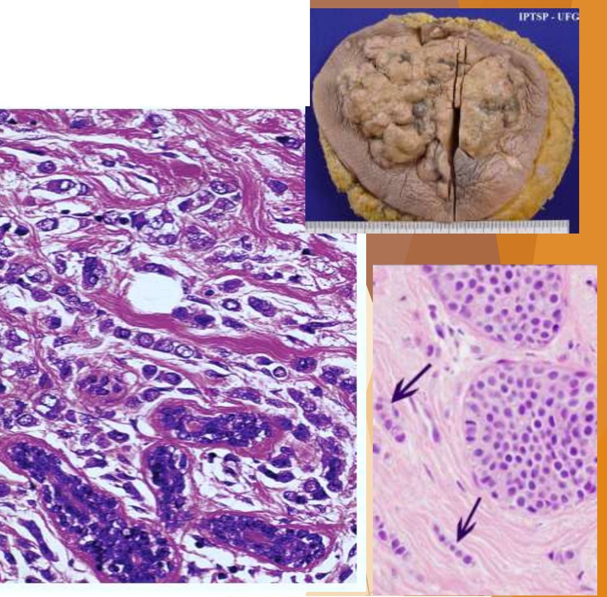
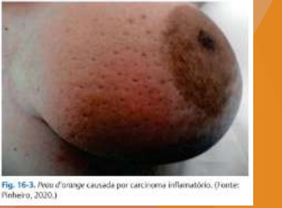
⚠️ Não confundir: CINE × lobular invasivo
CINE: forma nódulo duro, irregular, com desmoplasia; células coesas em túbulos, cordões e lâminas. Lobular: infiltra difusamente, pode não formar nódulo, células não coesas em fila. Na pré-neoplasia, a mesma lógica: HDA (coesa, cribriforme) × HLA (não coesa).
17 · Classificação molecular, tratamento e prognóstico
Técnicas que examinam DNA, RNA e proteínas das células tumorais dividem os carcinomas em subclasses moleculares. Na prática, a classificação se faz por imuno-histoquímica (IHQ): RE (receptor de estrogênio, marcação nuclear), RP (receptor de progesterona), HER2 (marcação de membrana/citoplasmática) e Ki-67 (índice proliferativo). HER2 com escore 2+ (duvidoso) precisa de FISH/ISH para confirmar amplificação.
| Subtipo | Perfil | Comportamento | Tratamento / prognóstico |
|---|---|---|---|
| Luminal A | RE+ e RP+, HER2−, Ki-67 baixo | Maior grupo (slide: 50–65%), mulheres 40+, mais na pós-menopausa; bem/moderadamente diferenciado, crescimento lento | Respondem bem ao bloqueio hormonal; melhor prognóstico |
| Luminal B | RE+, RP variável, Ki-67 alto | Menos diferenciado, maior proliferação, mais metástase que o A | Hormonioterapia + respondem melhor à quimioterapia; prognóstico intermediário |
| HER2-positivo | Superexpressão/amplificação de HER2 (cromossomo 17; FISH), em geral RE− | 2º grupo mais comum (slide: 10–20%), mais em mulheres < 40; indiferenciados, proliferação altíssima | Terapia anti-HER2 (trastuzumabe) + quimioterapia; prognóstico intermediário, boa resposta à terapia-alvo |
| Triplo-negativo | RE−, RP−, HER2− | Menos frequente (~10–15%), curso muito agressivo, alto grau, mais em jovens | Quimioterapia sistêmica; pior prognóstico, recidiva precoce |
- As classes moleculares correlacionam-se com prognóstico e resposta à terapia.
- Os luminais se beneficiam do bloqueio do receptor de estrogênio (tamoxifeno) ou de inibidor de aromatase (na pós-menopausa, quando o estrogênio vem da aromatização periférica).
- Bases do tratamento: cirurgia com ou sem esvaziamento linfático; radioterapia neoadjuvante ou adjuvante; quimioterapia e/ou terapia-alvo/imunoterapia.
- Fatores prognósticos: grau histológico (baixo, intermediário, alto), subtipo molecular, atividade mitótica / Ki-67 e estadiamento anatômico (tamanho do tumor, linfonodos, metástases).
- Estadiamento (slide 30): tamanho < 2 cm, 2–5 cm, > 5 cm (fases I a III) e fase IV com metástases à distância — principais sítios: fígado, pulmão e osso. O novo TNM passou a ter 7 variáveis: T, N, M + G (grau), HER2, RE e RP.
⚠️ Divergência interna nos slides: frequências e o HER2
O texto do slide 37 dá luminal A = 50–65% e HER2 = 10–20%, "RE negativos"; o infográfico do slide 38 dá luminal A ~40–50%, luminal B ~15–20%, HER2 ~15–20%, triplo-negativo ~10–15%. Os números variam com a fonte — fixe a ordem: luminal A é o maior grupo; triplo-negativo, o menor e mais agressivo. E o próprio slide 30 lembra que a amplificação de HER2 pode ocorrer em tumores RE+ (os "luminais B HER2+"); no grupo "HER2-enriquecido" clássico, o RE é negativo.
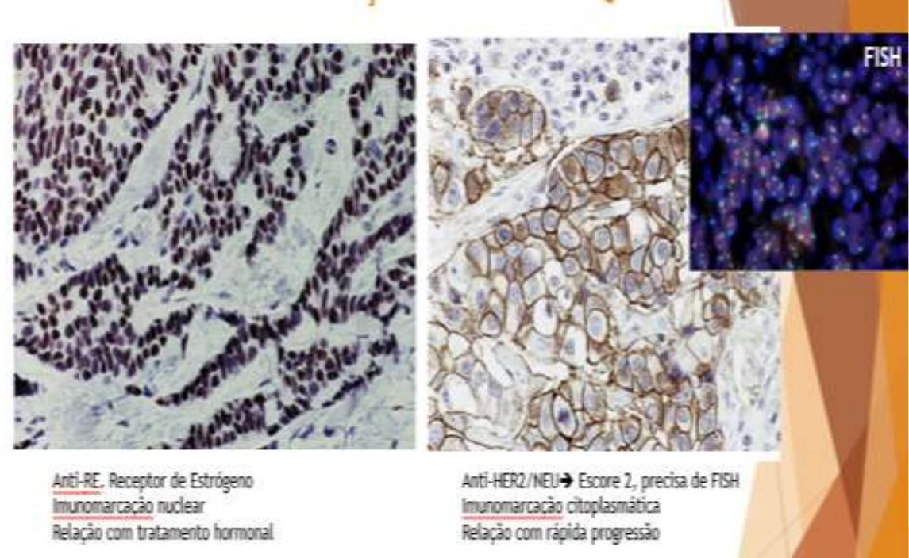
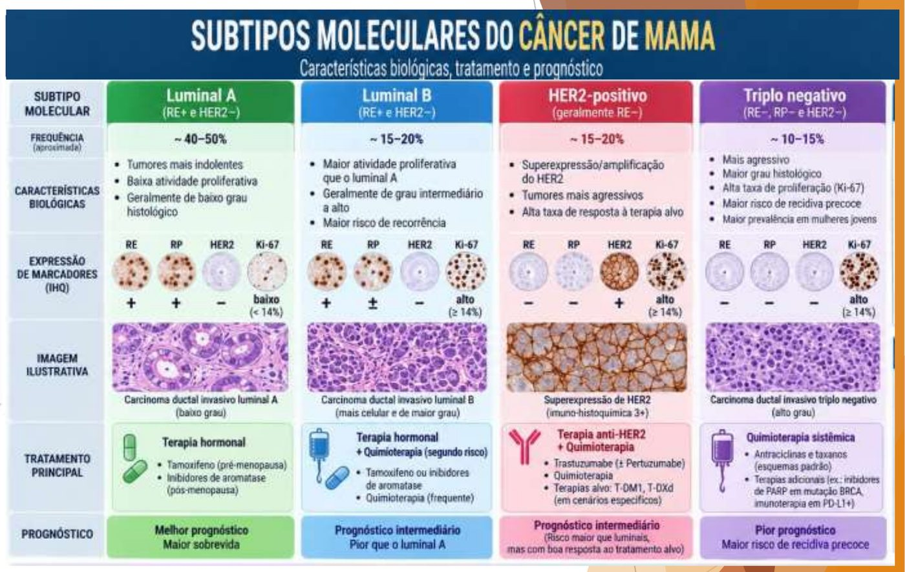
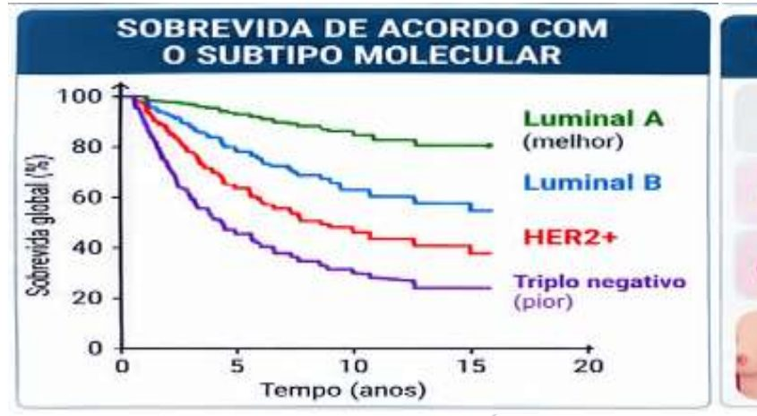
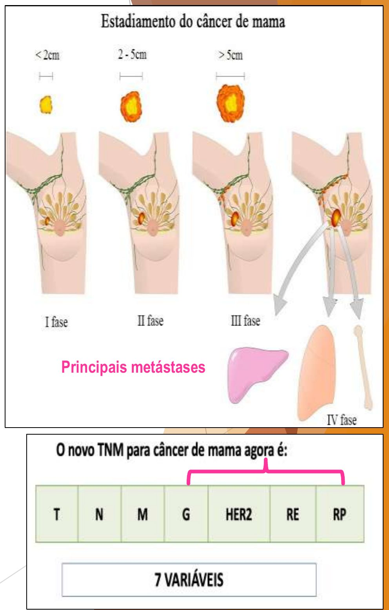
18 · Tumor filoides e mama masculina
Tumor filoides
- Surge do estroma intralobular, como o fibroadenoma.
- A maioria aparece na 6ª década; varia de poucos centímetros até lesões que ocupam a mama inteira.
- Semelhante ao fibroadenoma, mas com maior celularidade do estroma e possibilidade de atipias e mitoses.
- Três categorias: benigno, maligno e borderline.
- A mama também pode ter tumores benignos e malignos de origem muscular, adiposa e linfomas.
⚠️ Não confundir: fibroadenoma × filoides
Ambos vêm do estroma intralobular. Fibroadenoma: 20–30 anos, < 3 cm em geral, estroma pouco celular, benigno. Filoides: ~6ª década, pode ser grande, estroma mais celular, com atipia/mitoses, e pode ser maligno. O nome vem do aspecto em "folha" (projeções do estroma revestidas por epitélio em fendas).
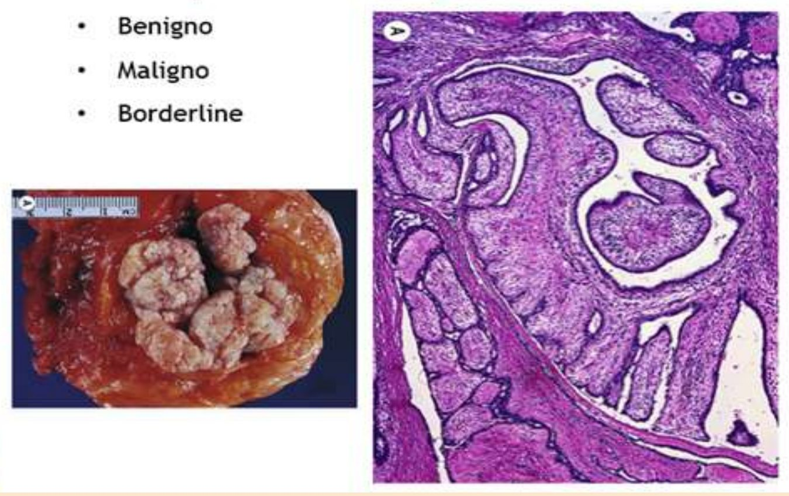
Mama masculina: ginecomastia
- Crescimento subareolar parecido com o botão mamário (aumento de tecido mamário); mama tumefeita semelhante à feminina, em adolescentes; uni ou bilateral.
- Pode indicar hiperestrogenismo ou alterações endócrinas sistêmicas: medicamentos que afetam hormônios, tumor produtor de estrogênio, senescência/obesidade.
- Diagnóstico diferencial: carcinoma de mama, sobretudo quando unilateral.
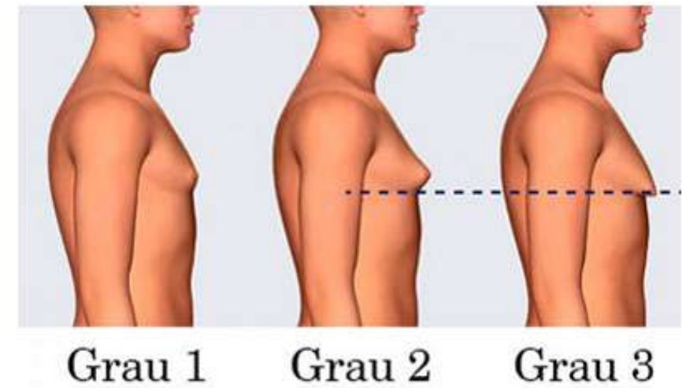
19 · Estudo de caso e o laudo final
🩺 Caso discutido nos slides
Mulher de 59 anos, bom estado geral, sem doenças de base ou medicação contínua. Hoje auxiliar de saúde bucal, mas trabalhou 15 anos em clínica radiológica. SUS-dependente, fez apenas 3 mamografias na vida (a última há 2 meses, pedida após a queixa). Tia com câncer de mama e uma irmã que morreu de tumor de mama (tipo desconhecido). Duas gestações, aos 35 e 38 anos, com aleitamento até os 6 meses.
No banho, percebeu retração ao movimentar o braço direito e, à palpação, massa "encaroçada" endurecida acima do mamilo direito. O médico de família encontrou nódulo de superfície rugosa na região retroareolar do QSE da mama direita, fixo e endurecido, com retração mamilar em repouso e na hiperextensão e leve mastalgia à palpação.
- Mamografia: tecido com densidades fibroglandulares esparsas; nódulo irregular, isodenso e indistinto, de 2,5 cm, na RRA da mama direita, com calcificações agrupadas; axilas habituais. Conclusão: BI-RADS 4 → biópsia por agulha grossa guiada por US.
- Anatomopatológico (core): carcinoma mamário invasivo de tipo não especial (ductal); grau histológico de Nottingham 2 (moderadamente diferenciado) — grau nuclear 2, sem formação de túbulos (escore 3), 1 mitose/mm² (escore 1); extensão de 16 mm; componente in situ não identificado; sem necrose, sem invasão perineural ou vascular; desmoplasia moderada; invasão do tecido adiposo adjacente presente.
- Imuno-histoquímica: RE positivo forte em 100%, RP positivo forte em 45%, HER2 2+ (duvidoso), Ki-67 30% → carcinoma invasivo tipo não especial, imunofenótipo luminal B; pedido ISH/FISH para o status de HER2.
Raciocínio pelas perguntas do slide
- Diferenciais só com a mamografia: nódulo irregular, indistinto, com microcalcificações agrupadas em mulher de 59 anos = suspeito de carcinoma (CDIS ou invasivo). Benignos que imitam: esteatonecrose (mas não há trauma/cirurgia), ectasia ductal (periareolar, mas costuma dar descarga), lesão esclerosante complexa. Fibroadenoma e cisto ficam improváveis pela idade e pela forma irregular.
- Hipóteses com MMG + anatomopatológico: CINE grau 2, luminal B (RE+, RP+, Ki-67 alto; HER2 a definir pelo FISH).
- O que muda por não ser mais CIS: a membrana basal foi rompida → risco de metástase linfática (estudar linfonodo sentinela/axila) e à distância; o tratamento deixa de ser só excisão com margens e passa a incluir estadiamento e terapia sistêmica conforme o perfil (hormonioterapia; quimioterapia; anti-HER2 se o FISH confirmar).
- Ao entregar o laudo e encaminhar: comunicar com clareza e acolhimento; encaminhar à referência (mastologia/oncologia) mantendo a coordenação do cuidado pela atenção primária; explicar a pendência do FISH; e, pela história familiar (tia, irmã), considerar aconselhamento genético e orientar as familiares.
🎯 Destaque do slide: o que o laudo final traz
Hoje o diagnóstico dos carcinomas invasivos é composto: (1) características das células tumorais; (2) membrana basal preservada, microinvadida ou infiltrada, e índice mitótico; (3) comportamento molecular (IHQ ± FISH); (4) classificação histológica + molecular, para o estadiamento.
🔗 Fatores de risco do caso
Idade (59), história familiar (tia e irmã), 1ª gestação após os 35, exposição ocupacional à radiação (15 anos em clínica radiológica) e baixa adesão ao rastreamento. A amamentação (6 meses em cada gestação) é fator protetor, mas não anula os outros. A localização (RRA/QSE) é a de maior prevalência.
✅ Resumo rápido da aula
- Histologia: glândula túbulo-alveolar · 6–10 sistemas ductais até a UDLT · dupla população: luminais (secretoras) por dentro, mioepiteliais (miofilamentos, ejeção) sobre a membrana basal · estroma intralobular (frouxo, hormonal) × interlobular (denso, gordura).
- Fisiologia: pré-púbere = masculina · ciclo: progesterona amadurece lóbulos e deixa o estroma edematoso · gestação = quase só lóbulos · menopausa = apoptose + lipossubstituição (MMG mais transparente).
- Desenvolvimento: politelia/polimastia na linha mamária · cauda de Spence (câncer ectópico) · inversão congênita ≠ retração unilateral adquirida · gigantomastia.
- Sintomas: mastalgia não cíclica, unilateral, localizada preocupa · nódulo: 10% aos 40 e 60% aos 50 podem ser câncer · descarga: espontânea, unilateral, sanguinolenta preocupa; 30% maligna > 60 anos.
- Inflamatórias: puerperal (1º mês, fissura, S. aureus, ATB + ordenha) · periductal (tabagismo 90%, metaplasia escamosa + queratina, fístula, excisão do ducto) · ectasia (multípara, 5ª–6ª década, descarga espessa branca, macrófagos xantomizados) · esteatonecrose (trauma/cirurgia, massa indolor, calcifica, células gigantes).
- LEBs: 1) fibrocísticas (não proliferativas: cistos com metaplasia apócrina, fibrose, adenose) · 2) proliferativas sem atipia (HDU leve ≤ 4 camadas / florida > 4; papiloma = descarga; cicatriz radial = DD com câncer) · 3) com atipia (HDA coesa, cribriforme; HLA não coesa) = precursoras, DD com CIS.
- Fibroadenoma: tumor benigno mais comum · 20–30 anos · estroma intralobular · móvel, fibroelástico, < 3 cm · cápsula fina, estroma comprime ductos · dupla população preservada · conduta expectante · ciclosporina.
- Rastreamento: MMG bienal 50+ (slide) · calcificações em pipoca = benignas; microcalcificações agrupadas = malignas · BI-RADS 0 inconclusivo, 1–2 rotina, 3 controle (< 2%), 4–5 biópsia core, 6 câncer comprovado · US melhor para cisto.
- Câncer: mais comum extracutâneo da mulher · 1:8 aos 90 anos · 73.610 casos (2025) · QSE 45%, RRA 25% · axila/sentinela · fatores: idade, menarca precoce, menopausa tardia, nuliparidade/1º filho > 35, BRCA, atipia prévia, obesidade pós-menopausa, álcool, TRH, radiação.
- Vias: RE+ (BRCA2, HDA → CDIS → luminal) · HER2 (amplificação) · RE− (BRCA1, TP53 → triplo-negativo).
- Histologia: 95% adenocarcinomas · ~30% in situ, ~70% invasivos · CDIS (membrana basal íntegra, comedo = necrose central; excisão com margens, 95% de sucesso) · Paget = CDIS na pele do mamilo, "eczema" unilateral · CINE (nódulo duro, irregular, fixo, desmoplasia, casca de laranja) · lobular (células não coesas, infiltração difusa).
- Molecular: luminal A (RE+ RP+ HER2−, Ki-67 baixo, hormonioterapia, melhor) · luminal B (RE+, RP variável, Ki-67 alto, + QT) · HER2+ (FISH, trastuzumabe) · triplo-negativo (pior) · tamoxifeno × inibidor de aromatase (pós-menopausa) · TNM com 7 variáveis.
- Outros: filoides (estroma intralobular, 6ª década, mais celular, benigno/borderline/maligno) · ginecomastia (hiperestrogenismo; DD com câncer se unilateral).
🧫 Resumão Pré-Prova · Patologias da Mama
Revisão da véspera · Anato Pato II · Aula 13 · AV3 · montado só pelos slides
- Glândula composta túbulo-alveolar · mamilo = escamoso queratinizado · 6–10 sistemas ductais → UDLT (onde se produz leite e onde nascem os carcinomas).
- Dupla população: luminais (camada única coesa, secretoras) + mioepiteliais (miofilamentos, ejeção, sobre a membrana basal) · células-tronco no ducto terminal.
- Estroma intralobular = frouxo, fibroblastos hormonais + linfócitos · interlobular = denso, fibroso, com gordura.
- Pré-púbere = masculina · pós-ovulação: progesterona → lóbulos maduros, estroma edematoso · menstruação: regressão · gestação: quase só lóbulos · menopausa: apoptose + lipossubstituição → MMG mais transparente.
- Prolactina = produção · ocitocina = ejeção (mioepiteliais).
- Politelia/polimastia na linha mamária · cauda de Spence (axila; câncer ectópico) · inversão congênita (bilateral, tração) ≠ retração unilateral adquirida (patológica) · gigantomastia.
- Mastalgia cíclica (30–40 anos, pré-menstrual) × não cíclica, unilateral, localizada = investigar.
- Nódulo: toda lesão palpável se investiga · palpável > 2 cm; menores no US · 10% aos 40, 60% aos 50 podem ser câncer.
- Descarga: menos comum, mais preocupante · endócrina = bilateral (prolactina, hipotireoidismo, fármacos) · alarme = espontânea, unilateral, sanguinolenta/serosa · 30% maligna > 60 anos.
- Mastite puerperal: 1º mês de amamentação · fissura + S. aureus · abscesso · mama túrgida, eritematosa, febre · ATB + ordenha.
- Mastite periductal: crônica, fora da lactação · 90% tabagismo · metaplasia escamosa do ducto → queratina retida → corpo estranho, abscesso, fístula · micro: granulomatosa · recidiva → excisão do ducto e do trajeto + ATB.
- Ectasia ductal: involução, 5ª–6ª década, multíparas · massa periareolar, retração, descarga espessa e branca · micro: ducto dilatado, granulomatosa, macrófagos xantomizados, plasmócitos, fibrose.
- Esteatonecrose: estroma interlobular · trauma/cirurgia · massa indolor, retração, calcifica · micro: necrose gordurosa liquefeita + granulação com células multinucleadas.
- Ectasia e esteatonecrose imitam câncer (massa firme + retração).
- 3 grupos por risco: 1) fibrocísticas (não proliferativas) · 2) proliferativas sem atipia · 3) proliferativas com atipia · esquema: não prolif. → 1–3% → prolif. → 5–17% → maligna · PAAF muito útil.
- Fibrocísticas (perimenopausa, não neoplásicas, nódulo regular e móvel): cistos (dilatação de ácinos, metaplasia apócrina, aspirados na PAAF) · fibrose (ruptura de cisto → cicatriz) · adenose (↑ nº de ácinos normais; calcificações) ≠ adenoma de lactação.
- Sem atipia (30–50 anos, nódulo esférico, regular, móvel): HDU > 2 camadas · leve ≤ 4 · florida > 4, luz preenchida, fenestrações periféricas · papiloma (ducto dilatado, eixos fibrovasculares, infarta, descarga papilar) · lesão esclerosante complexa ("cicatriz radial", sem trauma; centro fibrótico com glândulas atróficas; DD com câncer, como a adenose esclerosante).
- Com atipia: atipia focal, parcial, insuficiente para carcinoma · HDA (mais comum; monomórficas, regularmente espaçadas, cribriforme, preenche parte do ducto) · HLA (incomum; pequenas, redondas, não coesas) · ambas precursoras, DD com CIS.
- Fibroadenoma: tumor benigno mais comum · 20–30 anos · múltiplo/bilateral possível · estroma intralobular, "hiperplasia policlonal" (slide) epitelial + estromal, hormônio-responsiva · cresce na gestação, regride na menopausa.
- Massa circunscrita, móvel, firme, fibroelástica, < 3 cm · peça com fendas · micro: cápsula fina, estroma comprime e distorce os ductos, hialiniza na pós-menopausa · dupla população mantida = benignidade.
- Conduta expectante se confirmado benigno · 50% das transplantadas com ciclosporina · + fibrocística = fibroadenoma complexo · ⚠️ literatura: estroma clonal (MED12), neoplasia fibroepitelial.
- Filoides: estroma intralobular · 6ª década · até a mama toda · como o fibroadenoma, porém mais celular, atipias e mitoses · benigno, borderline, maligno.
- MMG desde a década de 80 · MS (slide): bienal, 50+; antes se fatores de risco; reivindicação 40+ · ⚠️ MS 2025: 50–74 bienal + 40–49 por decisão compartilhada · sensibilidade/especificidade ↑ com a idade (lipossubstituição).
- Radiodensidade assimétrica: fibroadenoma, cisto, carcinoma · calcificações: cisto apócrino, fibroadenoma hialinizado, CDIS, invasivo.
- Benigna = grosseira, bem delimitada, "em pipoca", difusa · maligna = microcalcificações agrupadas.
- BI-RADS: 0 inconclusivo · 1 negativo · 2 benigno (0%) · 3 provavelmente benigno (< 2%, controle 6/6 m no 1º ano, anual por mais 2) · 4 suspeito (2–95%) · 5 altamente suspeito (> 95%) · 6 malignidade comprovada · 4 e 5 → biópsia core.
- US também usa BI-RADS, melhor para cistos e mamas densas · correlação clínica sempre · cobertura de MMG baixa no país.
- Tumor maligno extracutâneo mais comum da mulher · slide: 2ª maior mortalidade (⚠️ no Brasil é a 1ª entre mulheres) · > 1 milhão/ano · 1:8 aos 90 anos · Brasil 2025: 73.610 casos · 2023: 20.165 óbitos.
- Topografia: QSE ~45%, RRA ~25% · metástase linfática → linfonodo sentinela → axila · à distância: fígado, pulmão, osso.
- Risco: 99% mulheres, 77% com 50+ · menarca < 11 (+30%) · nuliparidade / 1º filho > 35 · menopausa > 55 · 1º filho aos 20 = metade do risco · amamentação protege · BRCA, 1º grau · biópsia com atipia ou CIS · câncer de ovário/endométrio · brancas = mais incidência; negras = mais agressivo e mais jovem · obesidade pós-menopausa (aromatização periférica), álcool · TRH · radiação, agrotóxicos, trabalho noturno · BCRAT = risco absoluto.
- Hereditário ~12% (BRCA1/2, ~20 anos mais cedo) × esporádico (pós-menopausa, estrogênio).
- Vias: RE+ (BRCA2; atipia plana → HDA → CDIS → luminal) · HER2 (amplificação, sem precursora definida) · RE− (BRCA1, TP53 → triplo-negativo).
- 95% adenocarcinomas, todos da UDLT · ductal/lobular = nome clássico pela localização · diagnóstico: ~30% in situ, ~70% invasivo · 5%: CCE, filoides, sarcomas, linfomas.
- CDIS (~80% dos in situ; intraductal): ↑ com a MMG · membrana basal íntegra, mioepiteliais normais · comedocarcinoma (alto grau + necrose central) × não comedo (papilífero, cribriforme, sólido, sem necrose) · excisão com margens/quadrantectomia + linfonodos: 95% de sucesso.
- Paget: CDIS que sobe pelo seio galactóforo até a pele do mamilo/aréola · eritema, crosta, prurido unilaterais persistentes → confundido com eczema.
- CINE (ex-ductal invasivo, o mais frequente): nódulo duro, irregular, fixo, indolor, retração, casca de laranja · BI-RADS 4–6 · cordões infiltrantes + reação desmoplásica (explica dureza e retração) · bem → moderadamente → pouco diferenciado (glandular → anaplásico).
- CIE: o mais comum é o lobular invasivo · infiltração difusa, pode não formar nódulo · células não coesas · slide: até 40% bilaterais, associado a carcinoma inflamatório · outros: medular, mucinoso, papilífero.
- Carcinoma inflamatório: mama aumentada, edemaciada, eritematosa, sem massa · linfáticos dérmicos obstruídos · prognóstico muito ruim.
- IHQ: RE (nuclear) · RP · HER2 (membrana; 2+ = duvidoso → FISH) · Ki-67.
- Luminal A: RE+ RP+ HER2−, Ki-67 baixo · maior grupo · pós-menopausa · lento · hormonioterapia · melhor prognóstico.
- Luminal B: RE+, RP variável, Ki-67 alto · mais metástase · hormonioterapia + QT.
- HER2+: amplificação no cromossomo 17 · 2º grupo · < 40 anos · alta proliferação · trastuzumabe + QT.
- Triplo-negativo: RE− RP− HER2− · menos frequente · mais agressivo, jovens · QT · pior prognóstico.
- Luminais: tamoxifeno (bloqueia RE) ou inibidor de aromatase (pós-menopausa) · tratamento: cirurgia ± esvaziamento, RT neo/adjuvante, QT, terapia-alvo, imunoterapia.
- Prognóstico: grau histológico, subtipo, Ki-67/mitoses, estadiamento · novo TNM = 7 variáveis (T, N, M, G, HER2, RE, RP) · laudo final = células + membrana basal + índice mitótico + molecular.
- Ginecomastia: subareolar, hiperestrogenismo (fármacos, tumor, obesidade) · DD com câncer se unilateral.
- Mastite puerperal (lactante, S. aureus, ATB + ordenha) ≠ periductal (tabagista, queratina, fístula, excisão).
- Ectasia ductal (multípara, descarga branca, xantomizados) ≠ esteatonecrose (trauma, gordura necrótica, gigantócitos).
- Adenose (mais ácinos normais) ≠ adenoma de lactação (fisiológico).
- HDU (sem atipia, fenestrações periféricas irregulares) ≠ HDA (monomórfica, espaçada, cribriforme regular).
- HDA (coesa) ≠ HLA (não coesa) · e ambas ≠ CIS (preenche todo o ducto/lóbulo).
- Fibroadenoma (20–30 a, pouco celular, benigno) ≠ filoides (6ª década, celular, pode ser maligno).
- Calcificação em pipoca (benigna) ≠ microcalcificações agrupadas (maligna).
- BI-RADS 3 (controle) ≠ BI-RADS 4/5 (biópsia core) ≠ BI-RADS 6 (já comprovado).
- CDIS (membrana basal íntegra) ≠ CINE (invadiu, desmoplasia).
- CINE (nódulo, coeso) ≠ lobular (difuso, não coeso).
- Paget (CDIS na pele, unilateral) ≠ eczema (responde ao tratamento tópico).
- Luminal A (Ki-67 baixo) ≠ luminal B (Ki-67 alto, RP variável).
- BRCA2 → via RE+ ≠ BRCA1 → triplo-negativo.
- Tamoxifeno (bloqueia receptor) ≠ inibidor de aromatase (bloqueia síntese periférica, pós-menopausa).
Banco de Questões — Patologias da Mama
Anato Pato II · Aula 13 · estilo ENADE/residência · montado a partir dos slides.